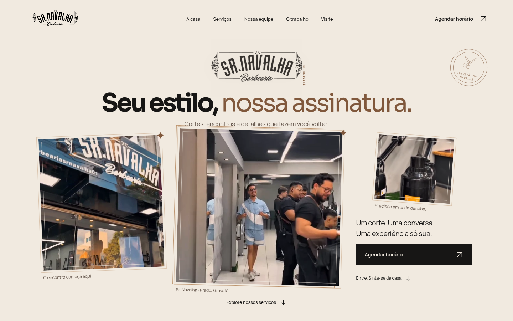
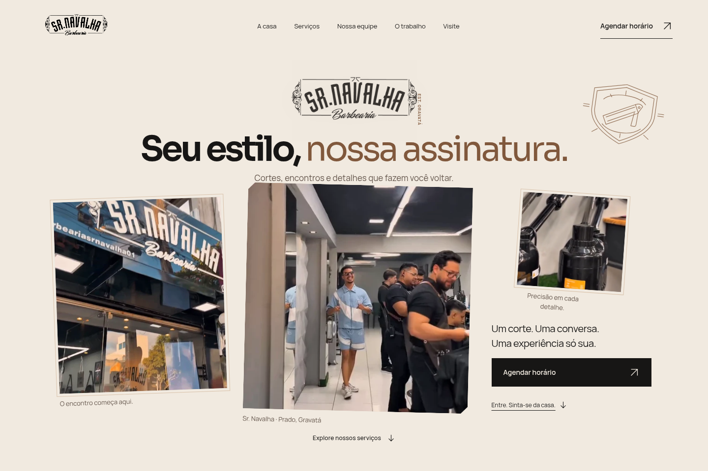
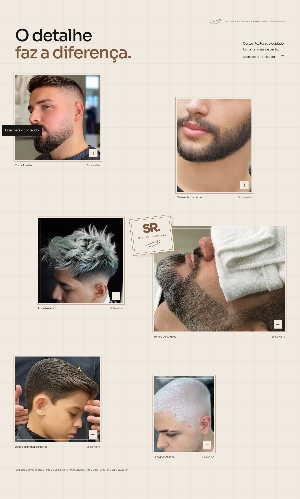
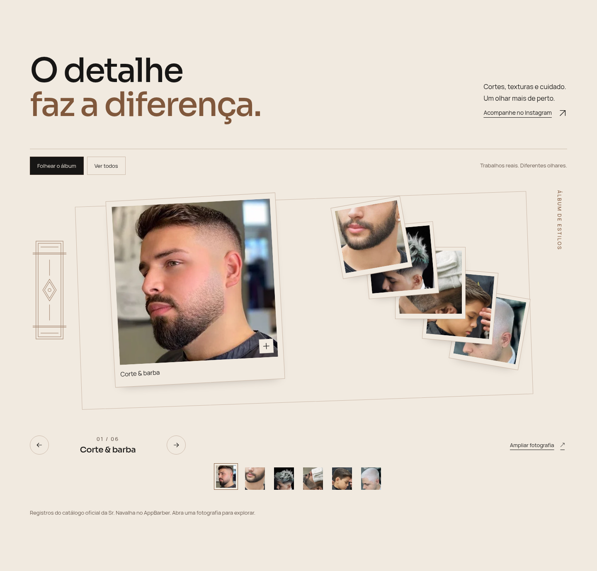

A V17 conserva a identidade fotográfica e comercial. As mudanças se concentram na gravura, no movimento e na exploração de profissionais e trabalhos. Compare o arquivo interativo no Live Server para observar as transições; estas imagens registram estados estáticos.




Abrir o site · Abertura: quadro intermediário · Álbum: quadro intermediário